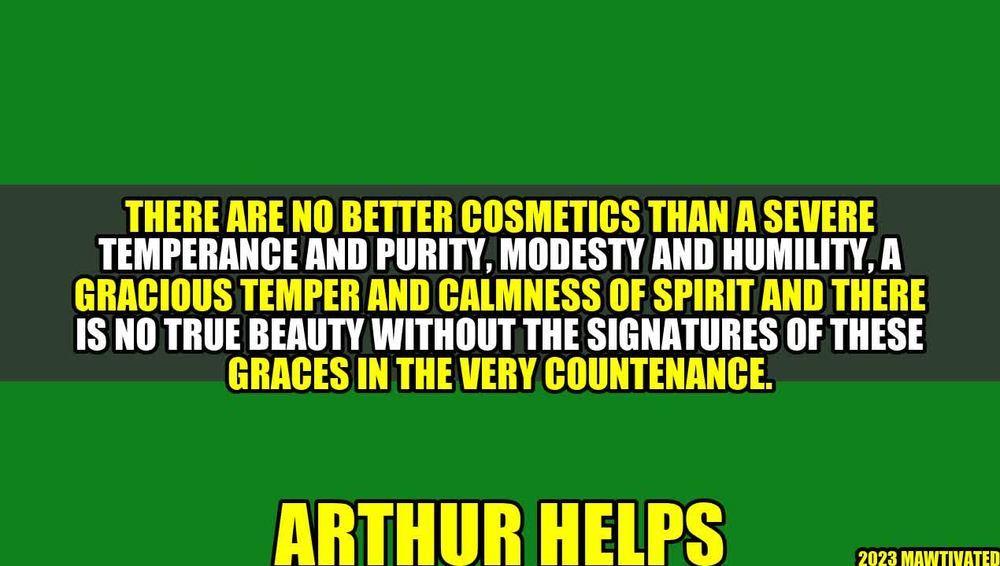

The Signatures of True Beauty

An Inspiring Story
Have you ever met someone who radiates beauty beyond their physical appearance? I once met a woman who had a simple yet elegant grace about her. As we spoke, I found myself drawn to not only her words but her demeanor - a calm spirit that exuded humility and kindness. It was then that I realized true beauty goes far beyond what the eye can see.
Author - Arthur Helps Story or Background
Arthur Helps was an English writer who believed that true beauty comes from within. He emphasized the importance of temperance, purity, modesty, humility, and graciousness, all of which contribute to what he referred to as the "signatures of beauty."
The Signatures of Beauty
According to Helps, there are five signatures of true beauty:
- Severe temperance and purity - Having self-control and living a life of morality and virtue.
- Modesty and humility - Being humble and unpretentious, not seeking attention or praise.
- Gracious temper - Responding kindly and gracefully in difficult situations.
- Calmness of spirit - Having inner peace and serenity that radiates outwardly.
- Countenance - A person's face and expression, which reflects their inner character and beauty.
Examples of True Beauty
Here are a few examples of individuals who embody the signatures of true beauty:
- Mother Teresa - Known for her humility, compassion, and service to the poor and sick, Mother Teresa was a beautiful example of a gracious and selfless spirit.
- Michelle Obama - Former First Lady Michelle Obama exuded confidence, intelligence, and grace, all while remaining grounded and approachable.
- Nelson Mandela - The late Nelson Mandela was known for his calmness of spirit, forgiveness, and resolve in the face of immense adversity.
Three Tips for Cultivating Inner Beauty
Here are some practical tips for cultivating inner beauty:
- Practice gratitude. Gratefulness can shift our perspective and cultivate a sense of contentment and peace. Take time each day to think about what you are thankful for.
- Show kindness. Find ways to show kindness to those around you - whether it's a smile, a compliment, or a small act of service.
- Cultivate self-awareness. Take time to reflect on your values and how you want to show up in the world. Being mindful of our actions and thoughts can help us to better align with our true selves.
"There are no better cosmetics than a severe temperance and purity, modesty and humility, a gracious temper and calmness of spirit and there is no true beauty without the signatures of these graces in the very countenance." - Arthur Helps
Conclusion
- True beauty goes beyond physical appearances.
- The signatures of true beauty include temperance, purity, modesty, humility, graciousness, and calmness of spirit.
- We can cultivate inner beauty through practicing gratitude, showing kindness, and cultivating self-awareness.
Hashtags
#truebeauty #innerbeauty #selfawareness #gratitude #kindness #ArthurHelps
SEO Keywords
True beauty, inner beauty, Arthur Helps, self-awareness, gratitude, kindness, calmness of spirit
Article Category
Self-improvement and personal development
Curated by Team Akash.Mittal.Blog
Curated by Team Akash.Mittal.Blog
Share on Twitter Share on LinkedIn